Environment Art · Work in progress
Modular
House Kit
A flexible architectural kit for building varied American houses efficiently, supported by procedural materials and a developing channel-packed weathering system.
Reference & research
I studied American colonial-style houses to identify the architectural features that needed to work across the kit. The references helped define the overall proportions, pitched and intersecting roof shapes, clapboard siding, window spacing, dormers, exterior trim and gutter placement.
Rather than reproducing one building exactly, I am combining recurring features from several houses into a reusable set of parts. This gives each assembly a consistent architectural language while allowing the silhouette and layout to change.
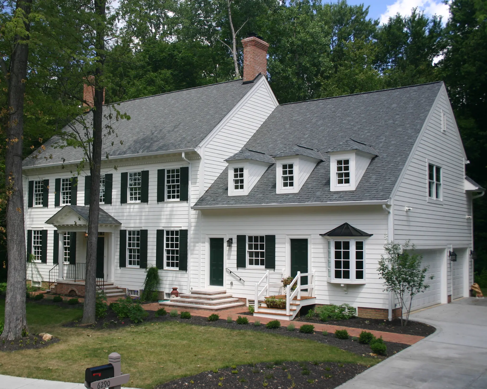
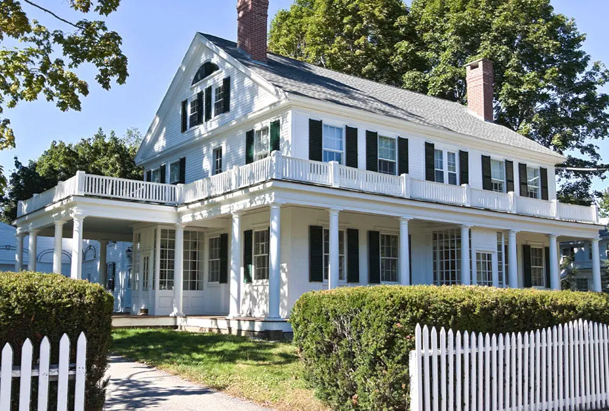
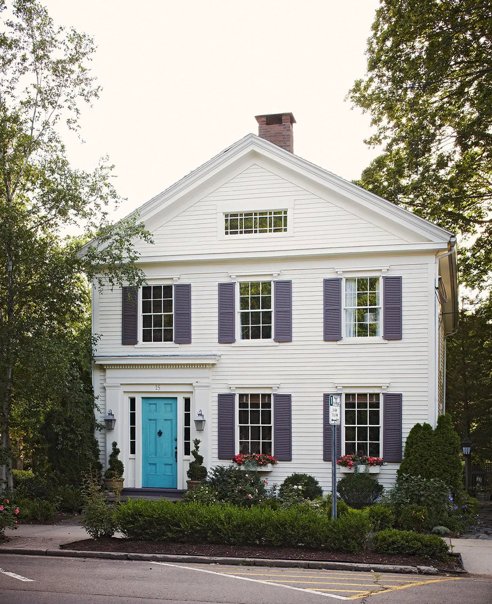
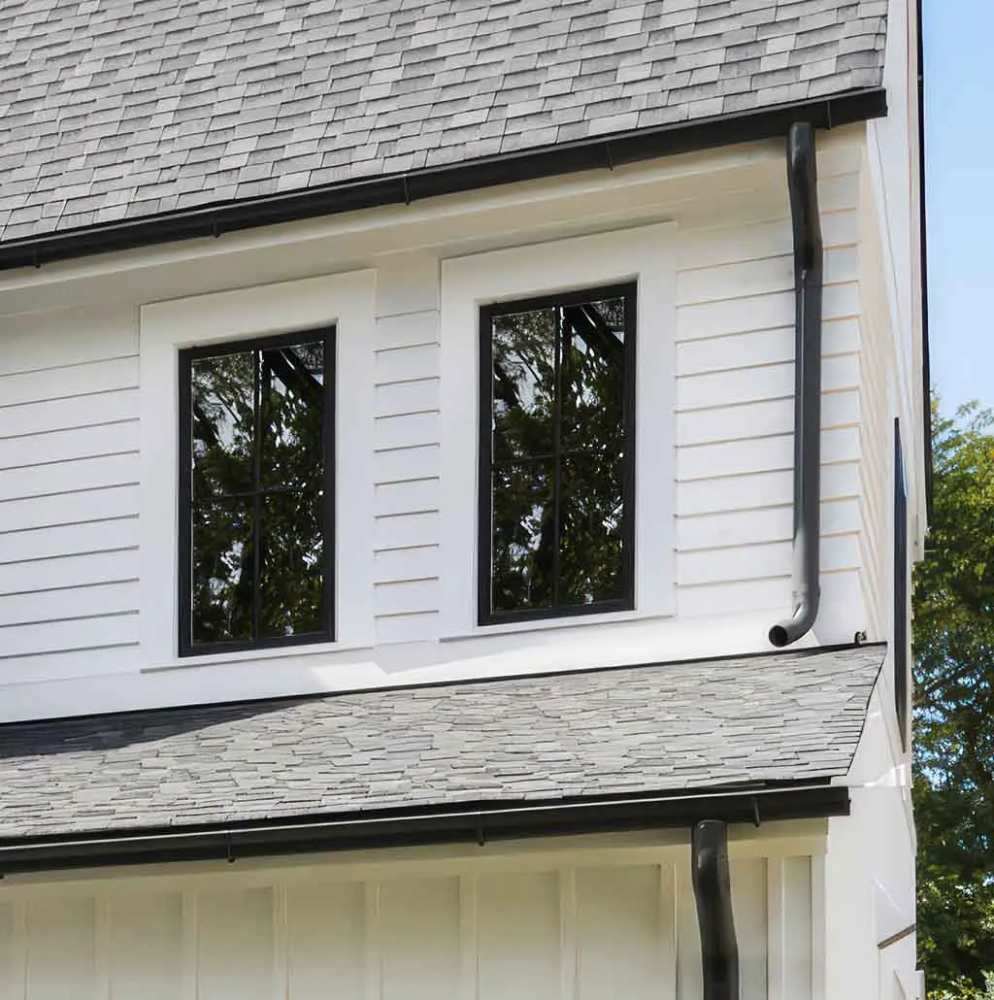
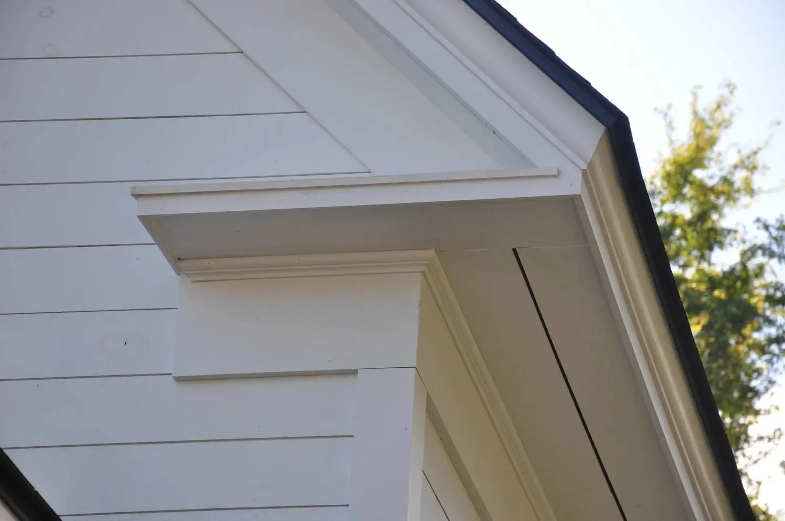
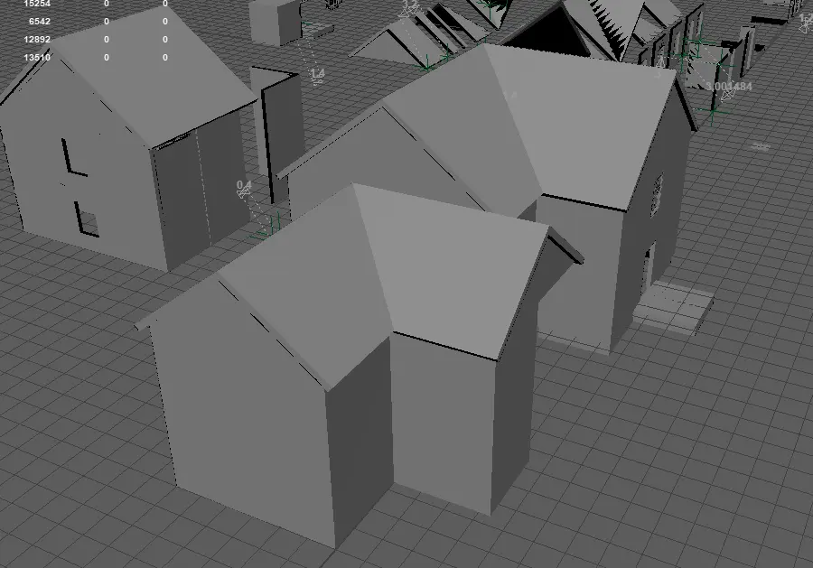
Modular planning
The kit is designed around reusable wall, roof, window, trim and gutter pieces built to a consistent metre-based grid. Shared dimensions let the same components connect across multiple house layouts while keeping scale and texel density predictable.
Testing several assemblies early helps reveal missing transitions and corner cases before detailed production begins. This approach keeps the kit flexible without creating a unique piece for every possible building shape.
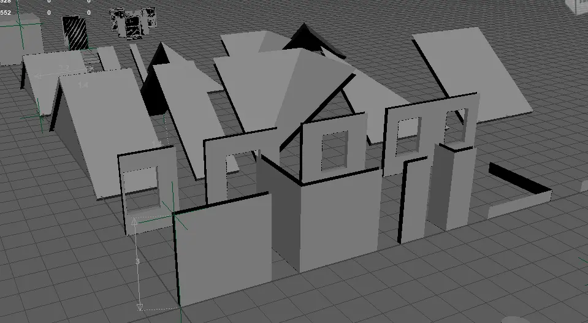
Procedural material development
I am creating tileable building materials in Substance 3D Designer so large surfaces can maintain detail without unique texture sets. The siding study establishes the repeated board profile and fine surface breakup, while the roof study explores a separate reusable tile pattern.
These materials are designed to support variation inside Unreal Engine, allowing the same modular geometry to be reused across multiple buildings without every result appearing identical.
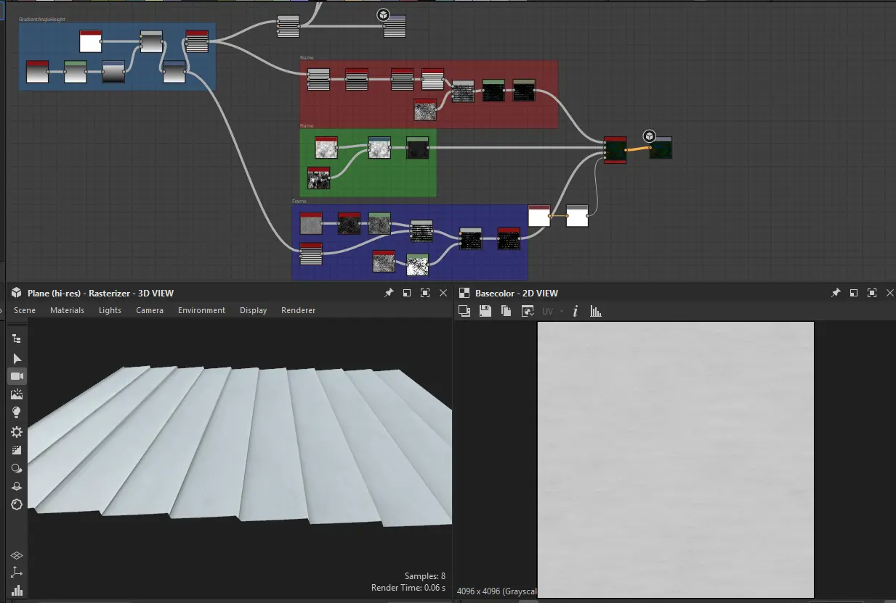
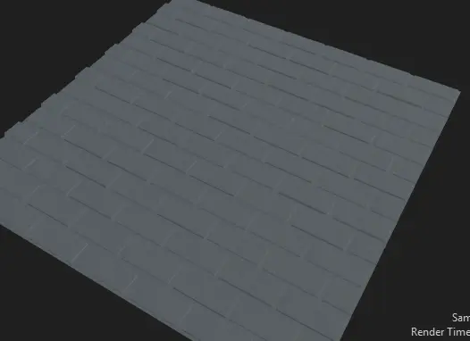
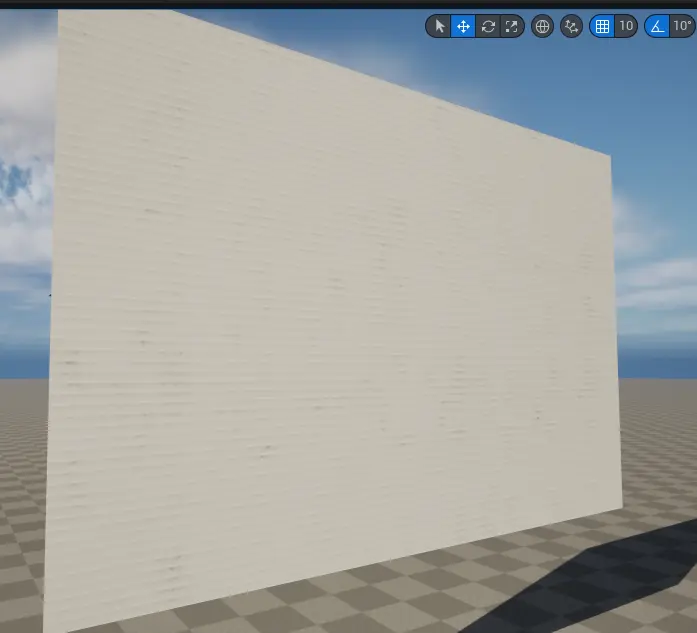
Packed weathering system
I created a packed RGBA weathering mask in Substance 3D Designer for use across the modular building kit. The red channel currently controls grime and dirt accumulation, allowing the weathering strength and appearance to be adjusted inside Unreal Engine.
The green, blue and alpha channels are reserved for additional effects that will be decided once the kit reaches its final stages. Packing several masks into one texture keeps the material flexible while reducing the number of separate texture files required.
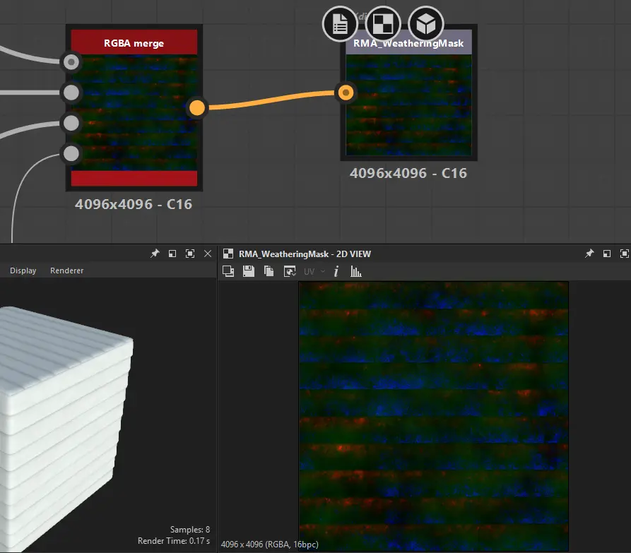
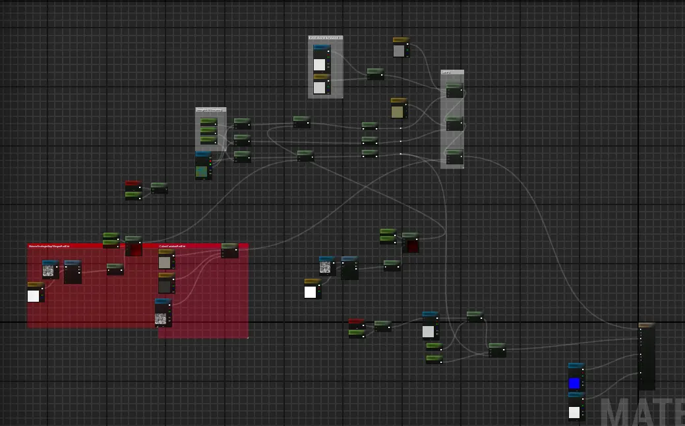
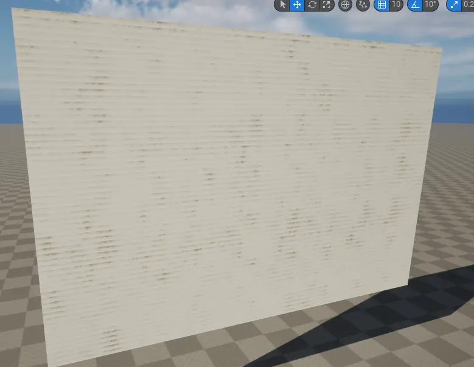
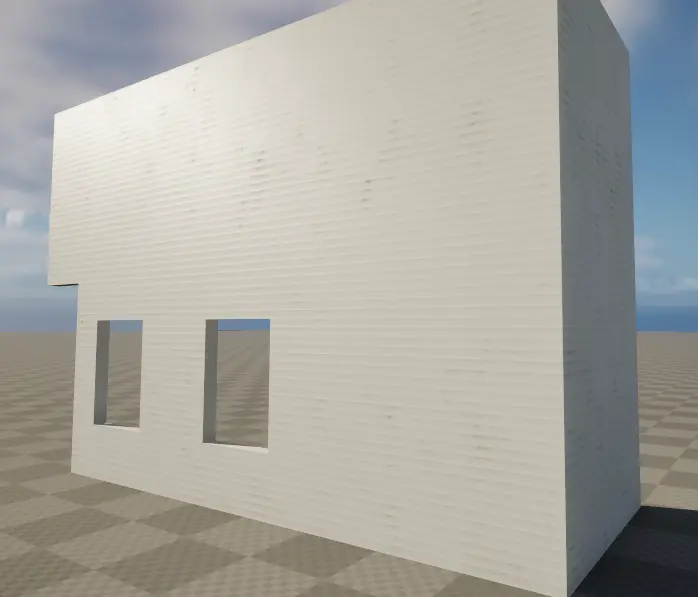
Next stage
The next phase is to finish the architectural kit, assign the remaining packed-mask channels according to the needs of the completed buildings, and create final environment assemblies with stronger material and structural variation.
This case study documents active development. The material system and final building presentation will continue to evolve as the kit approaches completion.